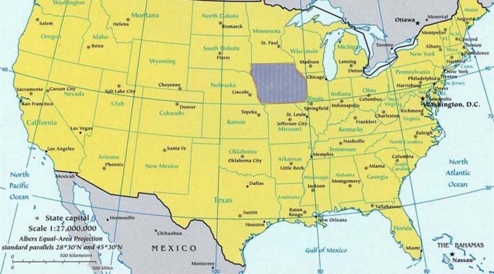
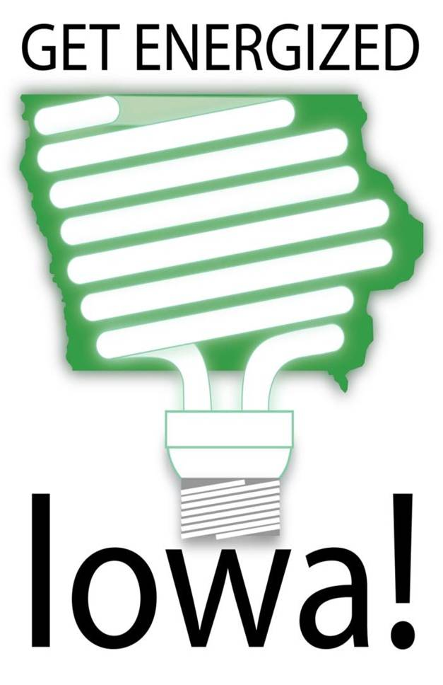
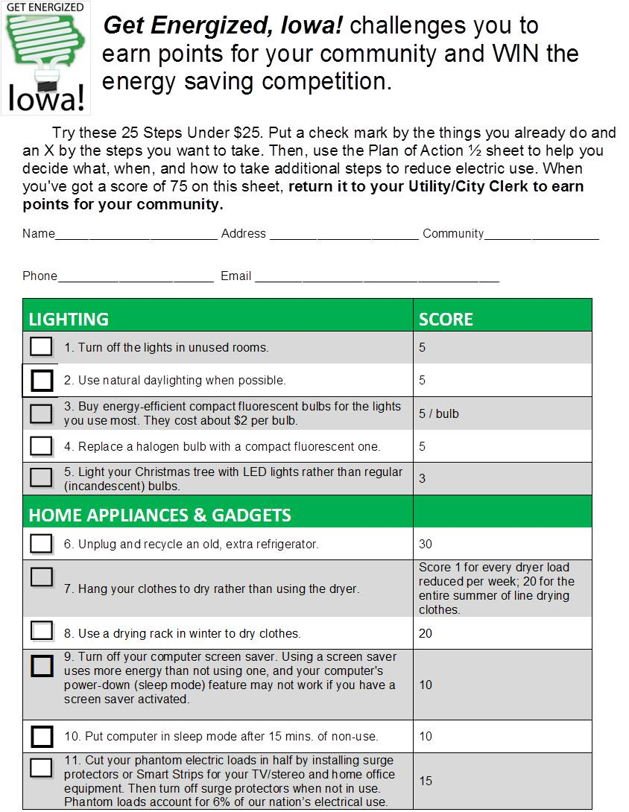

Tools Used
- Building Motivation Over Time
- Feedback
- Financial Incentives and Disincentives
- Norm Appeals
- Obtaining a Commitment
- Overcoming Specific Barriers
- Prompts
- Home Visits
- Word of mouth
Initiated By
- Iowa Policy Project
- University of Northern Iowa Center for Energy and Environmental Education
Partners
- Rural Electric Cooperative
- Iowa Association for Municipal Utilities
- Green Iowa AmeriCorps
- Four municipal utilities
- Citizens groups
Results
- A 4% energy reduction, 4,456,325 kWh over nine months, the equivalent of 5,941,105 kWh per year.
Case Study PDF
Five Minute Summary Slide Show Video
Webinar Transcript
Landmark Case Study
Get Energized, Iowa!
Get Energized, Iowa! is a highly replicable community-based program that encouraged rural Iowa communities to compete against one another to achieve high gas and electricity savings, based on actual usage. Designated in 2017.
Background
Get Energized, Iowa! pitted four communities against one another in a competition to reduce electric and natural gas usage. The program took advantage of the friendly rivalries that already existed among four rural communities, all of which were members of the same athletic conference for football.

State of Iowa shown in grey
Getting Informed
The Yates began in 2004 with several programs aimed a college students living in residence halls, then moved to working with neighborhood groups in a community, and finally to the level of the whole community, gaining experience about how best to implement such projects along the way
This competition was largely modeled on the “Take Charge Kansas! Challenge” that took place in 2010 and 2011. One of the staff members in these earlier initiatives had worked extensively on farm energy projects in rural areas; this included working with rural electric cooperatives and small utilities. The lessons learned from these projects provided organizers with valuable information about these audiences' values and interests.
Dr. Jack Yates, a professor of psychology at the University of Northern Iowa was hired to conduct the research, and develop a pre- and post-program survey to measure results. He worked with other staff members at the university's Center for Energy and Environmental Education.
During the research phase, organizers found that the energy saved through efficiencies was as large a source of energy as fossil and nuclear fuels combined. Reducing consumption through behavioural changes, therefore, represented an enormous untapped source of new energy.
Research showed that what people needed to successfully change their behaviours rested on three things: specific information, a plan, and community support.
In order to provide measurable and comparable results, baseline data on energy consumption and energy rates was collected over the course of 2010 and 2011. All data was weather normalized, i.e., heating and cooling degree days of the previous five years (2005-2009) were averaged to give an average weather year.
Delivering the Program
The competition began in April 2012 and ran untill December 2012.
Organizers first found community organizations in each of the four towns that were willing to serve as local guide teams for the project. With help from the researchers, each guide team determined how the competition would be implemented in its community. Using local teams helped organizers quickly raise the credibility of the program, tailor communications, gain community access, and promote peer-to-peer communication. (Norm Appeals; Personalized, Credible Communication; Word of Mouth)

Researchers worked with each team to help them develop a year-long action plan to educate their communities, foster the competition, and promote the program through existing community events.
The competition was based on a points system and points were awarded for many different behaviours, including taking specific energy-reducing actions, completing pre- and post-program surveys, and signing up for a free weatherization audit. A website was developed where people could check their community’s points and how that rated against the competition. (Competition)
Organizers developed a check list of 25 actions residents could take to reduce energy use. "There were enough things on the list that most people could always check off a few things," said Carole Yates, Program Manager with the university's Center for Energy and Environmental Education. "People saw that they were already saving energy; that affected their self-image." (Building Motivation Over Time; Obtaining a Commitment)
 The program promoted 25 low-cost actions
Many residents filled out these checklists at community events, “so people were talking with their neighbors about what they'd already done and making comparisons.” (Norm Appeals, Word of Mouth)
Residents were asked to fill out the checklists twice. The first round consisted of the actions people were already taking; in the second round, residents were asked to choose what other steps they could take and, from those steps, asked to choose five things that they would do. Then they were helped to make a personalized action plan. A later phone call acted as a reminder and mild social pressure by simply asking, “how’s it going? (Goal Setting; Obtaining a Commitment; Prompts)
Organizers advertised and promoted the program primarily through established rural community events, such as fish fries, community dinners and banquets, sports games, summer festivals and parades. Having a table at these events and a float in the official parades helped establish the programs as normal, socially approved parts of their communities. At the tables, residents were encouraged to take a free CFL bulb or sign up for a free weatherization audit. (Building Motivation over Time; Financial Incentives; Norm Appeals; Obtaining a Commitment; Personalized, Credible Communication)

Get Energized table at a Fish Fry in Fairbank
Organizers enlisted the help of Green Iowa AmeriCorps, a community service organization run out of the University of Northern Iowa, that addresses conservation issues. The AmeriCorps students conducted the weatherization audits and, in many cases, did some of the weatherization work free of charge, such as installing insulation and weather stripping. (Home Visits, Overcoming Specific Barriers)

To encourage participation in the audits and deepen participants’ engagement, signs were erected in the yards of those who'd had an audit done or who had signed up for one. (Building Motivation over Time; Norm Appeals; Obtaining a Commitment; Prompts)
"People often don't know what others in their communities are doing or have done to save energy," said Jack Yates. "But when people see that others are taking action it encourages them to do the same."
The winning community received a small solar photovoltaic system on one of its public building; all participating communities also received 25 trees, courtesy of Trees Forever, a non-profit organization in Iowa. (Financial Incentives)
Timeline
- April 2012 to December 2012 - intervention period
- January 2013 to December 2013 – actual energy savings determined through direct measurement of energy use
- January 2014 to June 2014 – persistence determined through direct measurement and surveys
Financing the Program
Get Energized, Iowa! received financial support from the Iowa Power Fund, Iowa Energy Center, Belin Foundation and the Hubbell Foundation. Funding helped to pay for the research components.
The estimated cost to replicate this program on a per community basis was $10,000 per community; of that, $2,000 per community would go directly to the guide team to help it develop and implement the competition.
Measuring Achievements
The program used a survey questionnaire to measure before and after-intervention attitudes, values, knowledge and behaviors regarding ways of saving energy. For a small sample, the reported changes were verified through interviews.
Organizers directly measured total residential gas and electric usage from January 2013 to December 2013 to determine actual energy savings. These figures were adjusted by degree day and by occupancy changes over the study period.
To measure the persistence of changes found, organizers resurveyed the four communities and recollected energy data from January 2014 till June 2014, up to 17 months following the end of the competition.
Results
Impacts – Individual
Over the nine-month program period, the total average household reduction in electricity use was 563 kWh (the equivalent of 750 kWh on an annualized basis) and represented a 4% reduction. At average U.S. electricity rates ($0.1264 per kWh in 2015), the average savings per household was $71.12 over nine months, and $94.80 per year.
The average household reduction in natural gas use was 51 therms (1,495 kWh) over nine months (the equivalent of 1,993 kWh on an annualized basis) and represented a 10% reduction. At average U.S. natural gas prices ($1.04 per therm in 2015) the average savings per household was $53.06.
Total savings per household was 2,245 kWh over nine months, or 2,993 kWh per year.
Keep in mind that these numbers include all residents, whether they participated in the program or not.
Impacts – Overall
In the four communities combined, 1,985 households took part in the program. The total overall savings was 4,456,325 kWh over nine months, the equivalent of 5,941,105 kWh per year.
One year after the program, energy use continued to decrease in all communities with one exception (there was a slight increase in natural gas use in one community). Relative to energy use in 2013 (the year for which actual energy savings were determined), participants saved an additional 12% for gas and 5% for electricity. Reported behaviour changes had generally persisted and in several cases had increased in frequency.

“Using natural daylighting” and “washing clothes in cold or warm water” were the two most commonly adopted actions resulting from the program.
Contacts
Dr. Jack Yates
Professor, Department of Psychology
University of Northern Iowa
jack.yates@uni.edu
Carole Yates
Program Manager, University of Northern Iowan Center for Energy and Environmental Education
carole.yates@uni.edu
Get Energized, Iowa
http://getenergizediowa.org/
Notes
Lessons Learned
Communities help people change their behaviours
One of the most important theoretical aspects of this project is the acknowledgement of the central role of one’s community in regulating personal choices and behaviour. The key regulatory role of community is only now beginning to be understood (see for example the studies by sociologist Robert D. Putnam).
Competition opens up new possibilities
Initially, organizers were skeptical about using a competitive model but found that it actually worked very well. "Everyone in American culture knows the competition game and how to play it. It also opened up new possibilities for social interaction and was a great way to put social pressure on people to change their behaviours," said Jack Yates.
"If I walk over to my neighbour's home and suggest that they need a weatherization audit, that sounds fussy and busybody. But if it's in the context of a competition--that if you cut your energy use you'll help us win the competition and beat our football rival--suddenly it's not considered weird behaviour anymore."
Carole Yates noted that the communities involved were more interested to learn who was leading in points than in the prize offered for the winning community. "When I called the Mayor of Dike to tell him who had won he said, 'I don't care who won. Did we beat Hudson?'" (Hudson was Dike's biggest football rival).
Act locally
Using local guide teams helped gain credibility for the program. Local community leaders and groups acted as the contact points for residents, and positioned the program as being delivered by the grassroots, rather than being imposed from the top down.
For others developing similar programs, Carole Yates recommended approaching groups to act as guides, rather than as leaders. "When I was first trying to find community organizations to lead the project, I got a lot of nos. When I asked them to simply guide the competition, that worked right away."
Jack Yates noted that most residents learned of the competition through community events. "Having a table at an event made getting involved convenient and removed barriers," he said. "In small communities, a large proportion of the community turns out for these events and that turned out to be a great way for us to talk to lots of people."
Make participation visible
Jack Yates noted that many people often don't know what others in their community are doing or have done to save energy. "But when people see that others are taking action it encourages them to do the same and invokes a lot of the social and cognitive strategies that we were deploying."
In terms of the weatherization audits, for example, signs were erected on people's lawns to show that they had had an audit performed or had signed up for one.
"In Readlyn the guide team leader was the president of the Community Club," said Carole Yates. "At one of their events, she leaned across the table to her friend and told her she'd had a weatherization audit done and encouraged her to get one as well. Her friend signed up on the spot!"
Give people specifics
"People didn't need to be convinced to save energy," Jack Yates said. What they needed, he said was specific information and the checklists provided that. Giving people lots of choice helped to remove barriers and, by encouraging them to continue with the actions they were already taking, motivation was built over time and made it easier for residents to take on more difficult tasks (such as replacing a furnace) or make permanent changes to their behaviour (such as taking shorter showers).
Landmark Designation
Designation as a Landmark (best practice) case study through our peer selection process recognizes programs and social marketing approaches considered to be among the most successful in the world. They are nominated both by our peer-selection panels and by Tools of Change staff, and are then scored by the selection panels based on impact, innovation, replicability and adaptability.
The panel that designated this program consisted of:
- Doug McKenzie-Mohr, McKenzie-Mohr Associates
- Devin Causley, Federation of Canadian Municipalities
- Arien Korteland, BC Hydro
- Brian Smith, Pacific Gas and Electric Company
- Edward Vine, Lawrence Berkeley National Laboratories
- Marsha Walton, New York Energy Research and Development Authority
- Dan York, ACEEE
This case study was wrtitten in 2016 by Jay Kassirer and Sharon Boddy.